A01_1_stilt_cottage act-01

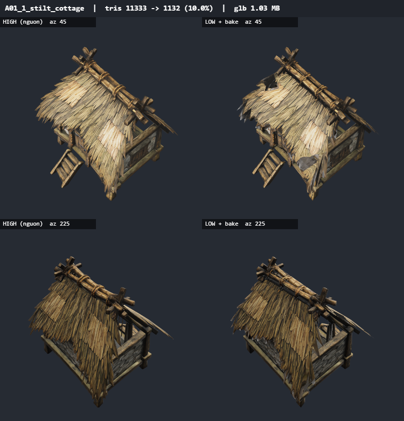
11333 → 1132 tam giác (10.0%) · 3.55 MB → 1.03 MB · 8.3s
baseColor 1024x1024 jpeg · metallicRoughness 1024x1024 jpeg · normal 1024x1024 jpeg · occlusion 1024x1024 jpeg
khối rời loại 13/77 (7% tam giác nguồn, đã bake vào texture) · UV 543 đảo, phủ 50% · bake phủ 50% · bbox lệch 0.144%
A01_2_walkway act-01

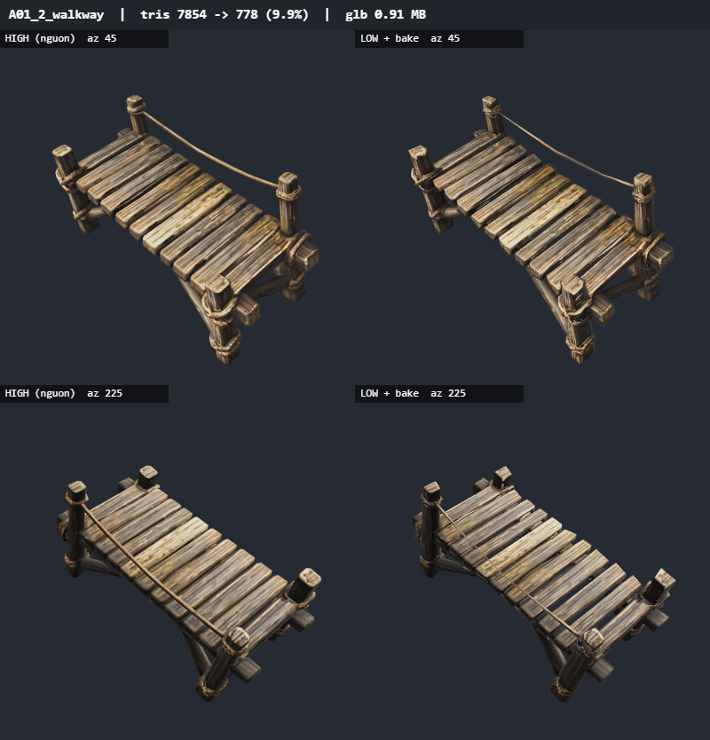
7854 → 778 tam giác (9.9%) · 1.59 MB → 0.91 MB · 6.5s
baseColor 1024x1024 jpeg · metallicRoughness 1024x1024 jpeg · normal 1024x1024 jpeg · occlusion 1024x1024 jpeg
khối rời loại 0/38 (0% tam giác nguồn, đã bake vào texture) · UV 357 đảo, phủ 50% · bake phủ 50% · bbox lệch 0.777%
A01_3_flint_wall act-01

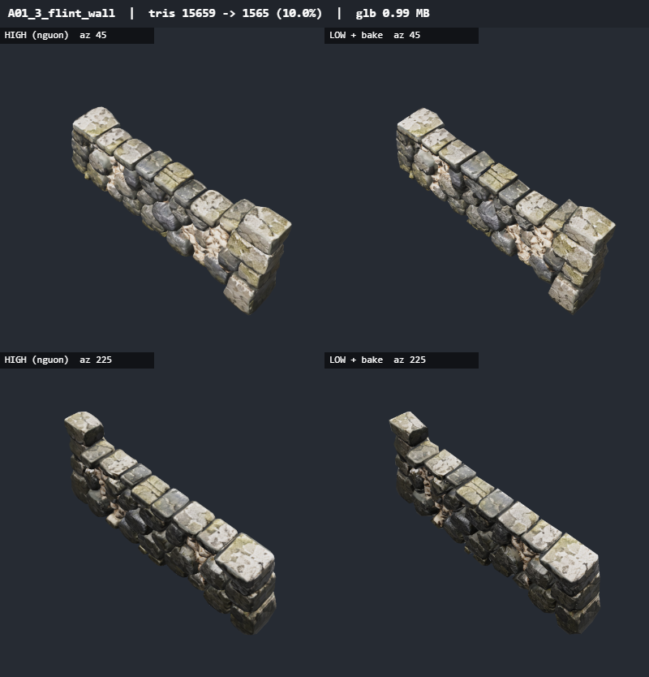
15659 → 1565 tam giác (10.0%) · 2.00 MB → 0.99 MB · 7.3s
baseColor 1024x1024 jpeg · metallicRoughness 1024x1024 jpeg · normal 1024x1024 jpeg · occlusion 1024x1024 jpeg
khối rời loại 0/1 (0% tam giác nguồn, đã bake vào texture) · UV 316 đảo, phủ 54% · bake phủ 54% · bbox lệch 0.256%
A01_4_hurdle_fence act-01

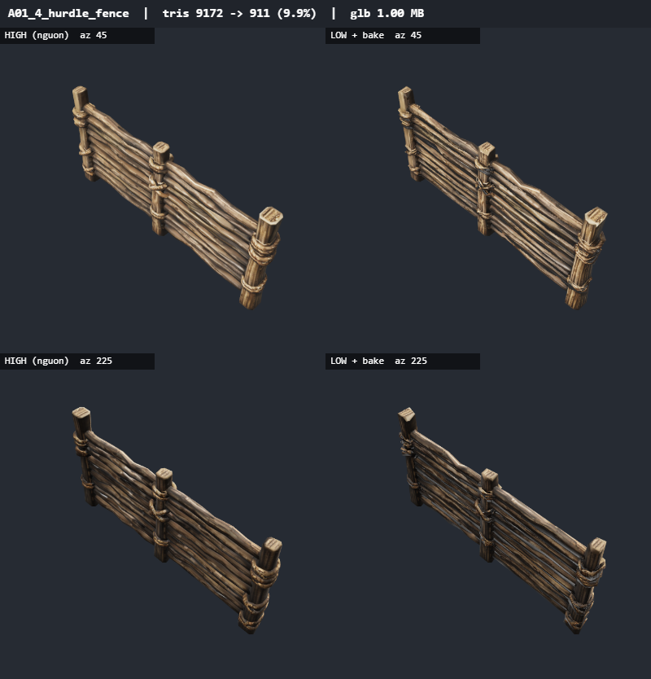
9172 → 911 tam giác (9.9%) · 1.34 MB → 1.00 MB · 6.1s
baseColor 1024x1024 jpeg · metallicRoughness 1024x1024 jpeg · normal 1024x1024 jpeg · occlusion 1024x1024 jpeg
khối rời loại 0/36 (0% tam giác nguồn, đã bake vào texture) · UV 378 đảo, phủ 48% · bake phủ 48% · bbox lệch 0.393%
A01_5_village_well act-01

19252 → 1906 tam giác (9.9%) · 2.77 MB → 1.13 MB · 8s
baseColor 1024x1024 jpeg · metallicRoughness 1024x1024 jpeg · normal 1024x1024 jpeg · occlusion 1024x1024 jpeg
khối rời loại 8/42 (1% tam giác nguồn, đã bake vào texture) · UV 786 đảo, phủ 50% · bake phủ 50% · bbox lệch 0.854%
A01_6_eel_trap_rack act-01

8778 → 872 tam giác (9.9%) · 3.24 MB → 1.03 MB · 8.4s
baseColor 1024x1024 jpeg · metallicRoughness 1024x1024 jpeg · normal 1024x1024 jpeg · occlusion 1024x1024 jpeg
khối rời loại 10/81 (5% tam giác nguồn, đã bake vào texture) · UV 474 đảo, phủ 42% · bake phủ 42% · bbox lệch 0.266%
A02_1_lychgate act-01

8288 → 825 tam giác (10.0%) · 2.69 MB → 0.93 MB · 6.6s
baseColor 1024x1024 jpeg · metallicRoughness 1024x1024 jpeg · normal 1024x1024 jpeg · occlusion 1024x1024 jpeg
khối rời loại 1/49 (1% tam giác nguồn, đã bake vào texture) · UV 349 đảo, phủ 52% · bake phủ 52% · bbox lệch 0.666%
A02_2_mortsafe act-01

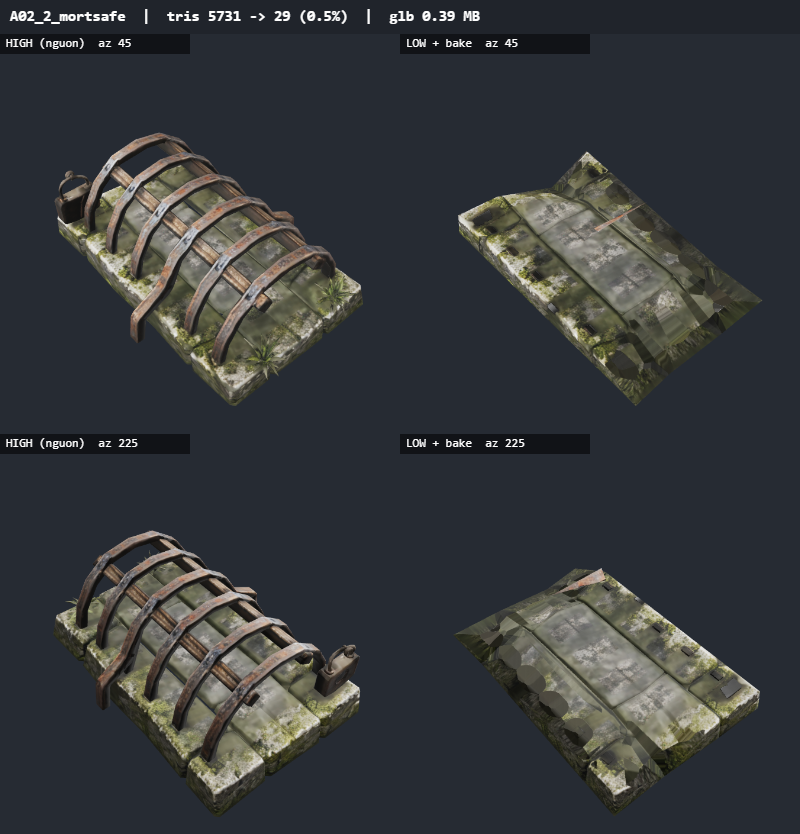
5731 → 1134 tam giác (19.8%) · 2.38 MB → 0.86 MB · 7.1s
baseColor 1024x1024 jpeg · metallicRoughness 1024x1024 jpeg · normal 1024x1024 jpeg · occlusion 1024x1024 jpeg
khối rời loại 3/17 (11% tam giác nguồn, đã bake vào texture) · UV 674 đảo, phủ 61% · bake phủ 60% · bbox lệch 1.116%
fallback unwrap: {"pPrune":true}
unwrap lỗi ({}): Không xếp được atlas
A02_3_headstones act-01

13819 → 4130 tam giác (29.9%) · 2.36 MB → 1.33 MB · 8.7s
baseColor 1024x1024 jpeg · metallicRoughness 1024x1024 jpeg · normal 1024x1024 jpeg · occlusion 1024x1024 jpeg
khối rời loại 0/24 (0% tam giác nguồn, đã bake vào texture) · UV 2710 đảo, phủ 42% · bake phủ 42% · bbox lệch 3.2%
bbox lệch 3.20% đường chéo
A02_4_ossuary_tower act-01

7231 → 722 tam giác (10.0%) · 2.86 MB → 0.84 MB · 7.6s
baseColor 1024x1024 jpeg · metallicRoughness 1024x1024 jpeg · normal 1024x1024 jpeg · occlusion 1024x1024 jpeg
khối rời loại 14/53 (17% tam giác nguồn, đã bake vào texture) · UV 205 đảo, phủ 68% · bake phủ 68% · bbox lệch 0.17%
A02_5_saint_statue_arch act-01

3681 → 367 tam giác (10.0%) · 1.52 MB → 0.65 MB · 5.2s
baseColor 1024x1024 jpeg · metallicRoughness 1024x1024 jpeg · normal 1024x1024 jpeg · occlusion 1024x1024 jpeg
khối rời loại 1/11 (0% tam giác nguồn, đã bake vào texture) · UV 66 đảo, phủ 63% · bake phủ 63% · bbox lệch 0.601%
A02_6_hand_cart act-01

5652 → 565 tam giác (10.0%) · 2.10 MB → 0.82 MB · 7.6s
baseColor 1024x1024 jpeg · metallicRoughness 1024x1024 jpeg · normal 1024x1024 jpeg · occlusion 1024x1024 jpeg
khối rời loại 2/40 (2% tam giác nguồn, đã bake vào texture) · UV 241 đảo, phủ 52% · bake phủ 52% · bbox lệch 1.726%
A03_4_moss_rock act-01

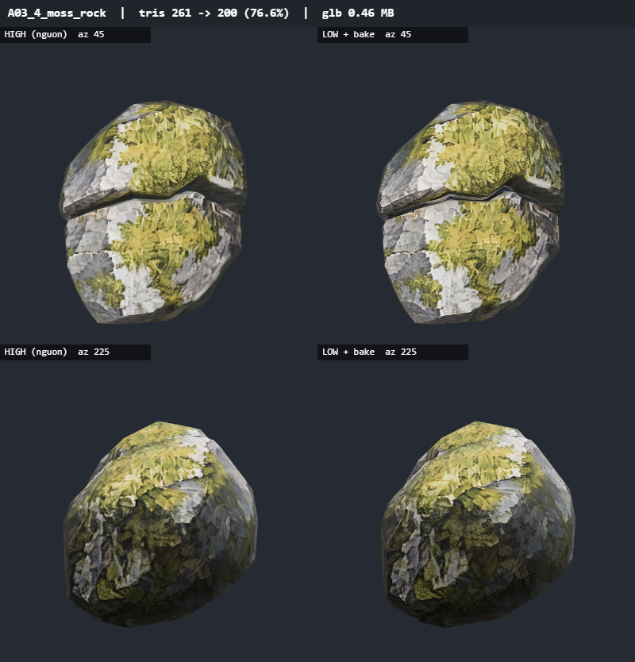
261 → 200 tam giác (76.6%) · 2.02 MB → 0.46 MB · 5.5s
baseColor 1024x1024 jpeg · metallicRoughness 1024x1024 jpeg · normal 1024x1024 jpeg · occlusion 1024x1024 jpeg
khối rời loại 0/2 (0% tam giác nguồn, đã bake vào texture) · UV 12 đảo, phủ 66% · bake phủ 66% · bbox lệch 0%
A03_5_peat_bank act-01

22603 → 2259 tam giác (10.0%) · 2.13 MB → 0.82 MB · 6.5s
baseColor 1024x1024 jpeg · metallicRoughness 1024x1024 jpeg · normal 1024x1024 jpeg · occlusion 1024x1024 jpeg
khối rời loại 0/77 (0% tam giác nguồn, đã bake vào texture) · UV 219 đảo, phủ 56% · bake phủ 56% · bbox lệch 0.271%
A03_6_root_stump act-01

6609 → 659 tam giác (10.0%) · 1.36 MB → 0.66 MB · 7.2s
baseColor 1024x1024 jpeg · metallicRoughness 1024x1024 jpeg · normal 1024x1024 jpeg · occlusion 1024x1024 jpeg
khối rời loại 0/4 (0% tam giác nguồn, đã bake vào texture) · UV 92 đảo, phủ 52% · bake phủ 52% · bbox lệch 0.15%
A04_1_old_willow act-01

11817 → 1169 tam giác (9.9%) · 4.87 MB → 0.95 MB · 7.6s
baseColor 1024x1024 jpeg · metallicRoughness 1024x1024 jpeg · normal 1024x1024 jpeg · occlusion 1024x1024 jpeg
khối rời loại 7/72 (0% tam giác nguồn, đã bake vào texture) · UV 335 đảo, phủ 46% · bake phủ 45% · bbox lệch 0.45%
A04_2_young_willow act-01

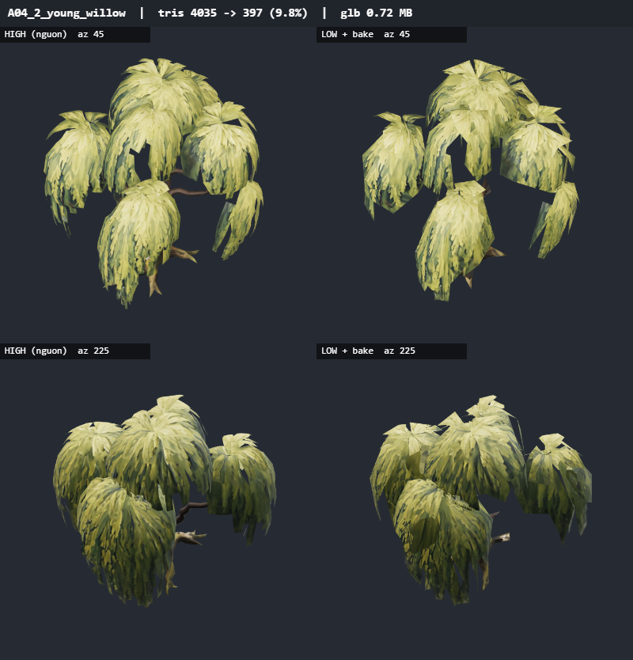
4035 → 397 tam giác (9.8%) · 1.52 MB → 0.72 MB · 7.4s
baseColor 1024x1024 jpeg · metallicRoughness 1024x1024 jpeg · normal 1024x1024 jpeg · occlusion 1024x1024 jpeg
khối rời loại 2/34 (0% tam giác nguồn, đã bake vào texture) · UV 139 đảo, phủ 52% · bake phủ 52% · bbox lệch 0.696%
A04_3_dead_tree act-01

6833 → 682 tam giác (10.0%) · 1.78 MB → 0.66 MB · 6.2s
baseColor 1024x1024 jpeg · metallicRoughness 1024x1024 jpeg · normal 1024x1024 jpeg · occlusion 1024x1024 jpeg
khối rời loại 3/22 (3% tam giác nguồn, đã bake vào texture) · UV 132 đảo, phủ 54% · bake phủ 54% · bbox lệch 1.329%
A04_5_hollow_trunk act-01

16800 → 1680 tam giác (10.0%) · 2.56 MB → 0.75 MB · 6.1s
baseColor 1024x1024 jpeg · metallicRoughness 1024x1024 jpeg · normal 1024x1024 jpeg · occlusion 1024x1024 jpeg
khối rời loại 3/13 (1% tam giác nguồn, đã bake vào texture) · UV 190 đảo, phủ 52% · bake phủ 52% · bbox lệch 0.065%
A04_6_willow_roots act-01

12793 → 1277 tam giác (10.0%) · 4.55 MB → 0.80 MB · 7.4s
baseColor 1024x1024 jpeg · metallicRoughness 1024x1024 jpeg · normal 1024x1024 jpeg · occlusion 1024x1024 jpeg
khối rời loại 1/39 (0% tam giác nguồn, đã bake vào texture) · UV 184 đảo, phủ 52% · bake phủ 52% · bbox lệch 2.711%
A06_1_causeway act-01

19154 → 1899 tam giác (9.9%) · 3.07 MB → 1.14 MB · 8.6s
baseColor 1024x1024 jpeg · metallicRoughness 1024x1024 jpeg · normal 1024x1024 jpeg · occlusion 1024x1024 jpeg
khối rời loại 44/155 (23% tam giác nguồn, đã bake vào texture) · UV 815 đảo, phủ 48% · bake phủ 48% · bbox lệch 2.556%
A06_2_marker_stone act-01

2674 → 266 tam giác (10.0%) · 2.25 MB → 0.60 MB · 6.2s
baseColor 1024x1024 jpeg · metallicRoughness 1024x1024 jpeg · normal 1024x1024 jpeg · occlusion 1024x1024 jpeg
khối rời loại 4/63 (6% tam giác nguồn, đã bake vào texture) · UV 85 đảo, phủ 71% · bake phủ 71% · bbox lệch 0%
A06_3_stepping_ford act-01

896 → 199 tam giác (22.2%) · 1.52 MB → 0.58 MB · 4.4s
baseColor 1024x1024 jpeg · metallicRoughness 1024x1024 jpeg · normal 1024x1024 jpeg · occlusion 1024x1024 jpeg
khối rời loại 0/8 (0% tam giác nguồn, đã bake vào texture) · UV 51 đảo, phủ 63% · bake phủ 63% · bbox lệch 0.183%
A06_4_bog_lure_post act-01

14551 → 1449 tam giác (10.0%) · 2.57 MB → 0.90 MB · 6.5s
baseColor 1024x1024 jpeg · metallicRoughness 1024x1024 jpeg · normal 1024x1024 jpeg · occlusion 1024x1024 jpeg
khối rời loại 27/73 (15% tam giác nguồn, đã bake vào texture) · UV 363 đảo, phủ 52% · bake phủ 52% · bbox lệch 0.332%
A06_5_fen_punt act-01

3366 → 336 tam giác (10.0%) · 1.93 MB → 0.57 MB · 5.4s
baseColor 1024x1024 jpeg · metallicRoughness 1024x1024 jpeg · normal 1024x1024 jpeg · occlusion 1024x1024 jpeg
khối rời loại 8/28 (2% tam giác nguồn, đã bake vào texture) · UV 81 đảo, phủ 54% · bake phủ 53% · bbox lệch 0.404%
A06_6_bridge_pier act-01

9897 → 1078 tam giác (10.9%) · 4.94 MB → 0.78 MB · 9.5s
baseColor 1024x1024 jpeg · metallicRoughness 1024x1024 jpeg · normal 1024x1024 jpeg · occlusion 1024x1024 jpeg
khối rời loại 18/69 (5% tam giác nguồn, đã bake vào texture) · UV 674 đảo, phủ 63% · bake phủ 63% · bbox lệch 9.425%
bbox lệch 9.42% đường chéo
A07_1_drowned_cottage act-01

11303 → 1123 tam giác (9.9%) · 3.54 MB → 0.97 MB · 10.2s
baseColor 1024x1024 jpeg · metallicRoughness 1024x1024 jpeg · normal 1024x1024 jpeg · occlusion 1024x1024 jpeg
khối rời loại 4/49 (0% tam giác nguồn, đã bake vào texture) · UV 418 đảo, phủ 58% · bake phủ 58% · bbox lệch 0.708%
A07_2_weir act-01

1427 → 205 tam giác (14.4%) · 1.16 MB → 0.68 MB · 5.6s
baseColor 1024x1024 jpeg · metallicRoughness 1024x1024 jpeg · normal 1024x1024 jpeg · occlusion 1024x1024 jpeg
khối rời loại 0/34 (0% tam giác nguồn, đã bake vào texture) · UV 129 đảo, phủ 63% · bake phủ 63% · bbox lệch 0.287%
A07_3_gable_wall act-01

9354 → 927 tam giác (9.9%) · 3.60 MB → 1.05 MB · 7.1s
baseColor 1024x1024 jpeg · metallicRoughness 1024x1024 jpeg · normal 1024x1024 jpeg · occlusion 1024x1024 jpeg
khối rời loại 0/147 (0% tam giác nguồn, đã bake vào texture) · UV 480 đảo, phủ 48% · bake phủ 48% · bbox lệch 0.677%
A07_4_roof_platform act-01

10550 → 1054 tam giác (10.0%) · 3.25 MB → 0.89 MB · 12.3s
baseColor 1024x1024 jpeg · metallicRoughness 1024x1024 jpeg · normal 1024x1024 jpeg · occlusion 1024x1024 jpeg
khối rời loại 0/24 (0% tam giác nguồn, đã bake vào texture) · UV 297 đảo, phủ 61% · bake phủ 59% · bbox lệch 0.95%
A07_5_plank_raft act-01

8173 → 771 tam giác (9.4%) · 3.28 MB → 0.86 MB · 7.3s
baseColor 1024x1024 jpeg · metallicRoughness 1024x1024 jpeg · normal 1024x1024 jpeg · occlusion 1024x1024 jpeg
khối rời loại 0/48 (0% tam giác nguồn, đã bake vào texture) · UV 337 đảo, phủ 54% · bake phủ 54% · bbox lệch 1.147%
A07_6_roost_pole act-01

13160 → 1305 tam giác (9.9%) · 1.33 MB → 0.87 MB · 7.4s
baseColor 1024x1024 jpeg · metallicRoughness 1024x1024 jpeg · normal 1024x1024 jpeg · occlusion 1024x1024 jpeg
khối rời loại 44/125 (16% tam giác nguồn, đã bake vào texture) · UV 195 đảo, phủ 52% · bake phủ 52% · bbox lệch 4.403%
bbox lệch 4.40% đường chéo
A08_2_drystone_wall act-01

8606 → 859 tam giác (10.0%) · 1.47 MB → 0.84 MB · 7.7s
baseColor 1024x1024 jpeg · metallicRoughness 1024x1024 jpeg · normal 1024x1024 jpeg · occlusion 1024x1024 jpeg
khối rời loại 0/64 (0% tam giác nguồn, đã bake vào texture) · UV 299 đảo, phủ 58% · bake phủ 58% · bbox lệch 0.151%
A08_2_squeeze_stile act-01

9730 → 969 tam giác (10.0%) · 2.00 MB → 0.89 MB · 7.7s
baseColor 1024x1024 jpeg · metallicRoughness 1024x1024 jpeg · normal 1024x1024 jpeg · occlusion 1024x1024 jpeg
khối rời loại 0/75 (0% tam giác nguồn, đã bake vào texture) · UV 334 đảo, phủ 58% · bake phủ 58% · bbox lệch 0.843%
A08_3_farmhouse act-01

13584 → 1357 tam giác (10.0%) · 5.25 MB → 1.10 MB · 9.7s
baseColor 1024x1024 jpeg · metallicRoughness 1024x1024 jpeg · normal 1024x1024 jpeg · occlusion 1024x1024 jpeg
khối rời loại 25/157 (8% tam giác nguồn, đã bake vào texture) · UV 493 đảo, phủ 52% · bake phủ 52% · bbox lệch 0.263%
A08_4_hay_rick act-01

3774 → 376 tam giác (10.0%) · 1.09 MB → 0.74 MB · 6.4s
baseColor 1024x1024 jpeg · metallicRoughness 1024x1024 jpeg · normal 1024x1024 jpeg · occlusion 1024x1024 jpeg
khối rời loại 0/22 (0% tam giác nguồn, đã bake vào texture) · UV 103 đảo, phủ 56% · bake phủ 55% · bbox lệch 4.08%
bbox lệch 4.08% đường chéo
A08_5_field_gate act-01

10027 → 1002 tam giác (10.0%) · 1.61 MB → 0.93 MB · 6.7s
baseColor 1024x1024 jpeg · metallicRoughness 1024x1024 jpeg · normal 1024x1024 jpeg · occlusion 1024x1024 jpeg
khối rời loại 4/55 (6% tam giác nguồn, đã bake vào texture) · UV 364 đảo, phủ 54% · bake phủ 54% · bbox lệch 0.856%
A08_6_poppy_rack act-01

10860 → 1081 tam giác (10.0%) · 3.03 MB → 0.93 MB · 7.1s
baseColor 1024x1024 jpeg · metallicRoughness 1024x1024 jpeg · normal 1024x1024 jpeg · occlusion 1024x1024 jpeg
khối rời loại 53/151 (20% tam giác nguồn, đã bake vào texture) · UV 446 đảo, phủ 52% · bake phủ 52% · bbox lệch 0.001%
A11_1_cloister_bay act-01

6571 → 657 tam giác (10.0%) · 2.26 MB → 0.79 MB · 8.5s
baseColor 1024x1024 jpeg · metallicRoughness 1024x1024 jpeg · normal 1024x1024 jpeg · occlusion 1024x1024 jpeg
khối rời loại 2/17 (1% tam giác nguồn, đã bake vào texture) · UV 286 đảo, phủ 61% · bake phủ 57% · bbox lệch 6.601%
bbox lệch 6.60% đường chéo
A11_2_hospice_bed act-01

2194 → 218 tam giác (9.9%) · 0.74 MB → 0.60 MB · 7.5s
baseColor 1024x1024 jpeg · metallicRoughness 1024x1024 jpeg · normal 1024x1024 jpeg · occlusion 1024x1024 jpeg
khối rời loại 0/11 (0% tam giác nguồn, đã bake vào texture) · UV 78 đảo, phủ 66% · bake phủ 66% · bbox lệch 0.352%
A11_3_refectory_table act-01

9167 → 904 tam giác (9.9%) · 1.91 MB → 0.79 MB · 7.1s
baseColor 1024x1024 jpeg · metallicRoughness 1024x1024 jpeg · normal 1024x1024 jpeg · occlusion 1024x1024 jpeg
khối rời loại 3/51 (3% tam giác nguồn, đã bake vào texture) · UV 348 đảo, phủ 58% · bake phủ 58% · bbox lệch 3.808%
bbox lệch 3.81% đường chéo
A11_4_gate_tower act-01

14477 → 1701 tam giác (11.8%) · 4.92 MB → 1.11 MB · 11.4s
baseColor 1024x1024 jpeg · metallicRoughness 1024x1024 jpeg · normal 1024x1024 jpeg · occlusion 1024x1024 jpeg
khối rời loại 6/28 (7% tam giác nguồn, đã bake vào texture) · UV 977 đảo, phủ 42% · bake phủ 41% · bbox lệch 0.744%
A11_5_kitchen_hearth act-01

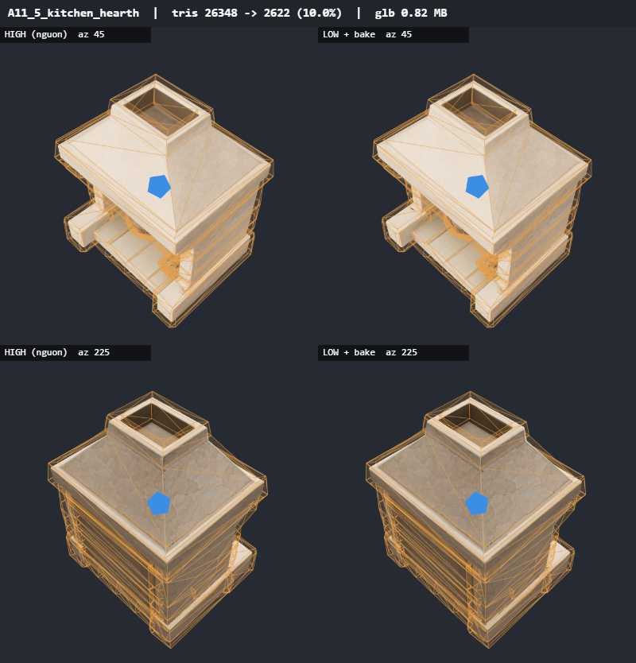
26348 → 2622 tam giác (10.0%) · 2.95 MB → 0.82 MB · 8.6s
baseColor 1024x1024 jpeg · metallicRoughness 1024x1024 jpeg · normal 1024x1024 jpeg · occlusion 1024x1024 jpeg
khối rời loại 2/26 (8% tam giác nguồn, đã bake vào texture) · UV 338 đảo, phủ 66% · bake phủ 66% · bbox lệch 0.076%
fallback unwrap: {"pPrune":true}
unwrap lỗi ({}): Không xếp được atlas
A11_6_candle_stand act-01

4102 → 409 tam giác (10.0%) · 0.67 MB → 0.47 MB · 5.7s
baseColor 1024x1024 jpeg · metallicRoughness 1024x1024 jpeg · normal 1024x1024 jpeg · occlusion 1024x1024 jpeg
khối rời loại 0/4 (0% tam giác nguồn, đã bake vào texture) · UV 50 đảo, phủ 68% · bake phủ 68% · bbox lệch 0.113%
A13_1_bed_furrow act-01

4567 → 456 tam giác (10.0%) · 2.36 MB → 0.60 MB · 7.6s
baseColor 1024x1024 jpeg · metallicRoughness 1024x1024 jpeg · normal 1024x1024 jpeg · occlusion 1024x1024 jpeg
khối rời loại 0/15 (0% tam giác nguồn, đã bake vào texture) · UV 93 đảo, phủ 71% · bake phủ 71% · bbox lệch 0.146%
A13_2_canopy_frame act-01

5333 → 529 tam giác (9.9%) · 1.41 MB → 0.70 MB · 5.2s
baseColor 1024x1024 jpeg · metallicRoughness 1024x1024 jpeg · normal 1024x1024 jpeg · occlusion 1024x1024 jpeg
khối rời loại 0/22 (0% tam giác nguồn, đã bake vào texture) · UV 267 đảo, phủ 63% · bake phủ 63% · bbox lệch 0.546%
A13_3_night_light_jar act-01

4376 → 432 tam giác (9.9%) · 0.79 MB → 0.63 MB · 7s
baseColor 1024x1024 jpeg · metallicRoughness 1024x1024 jpeg · normal 1024x1024 jpeg · occlusion 1024x1024 jpeg
khối rời loại 2/19 (1% tam giác nguồn, đã bake vào texture) · UV 94 đảo, phủ 66% · bake phủ 66% · bbox lệch 0.978%
fallback unwrap: {"pPrune":true}
unwrap lỗi ({}): Không xếp được atlas
A13_4_bell_post act-01

13991 → 1391 tam giác (9.9%) · 1.68 MB → 0.76 MB · 6.6s
baseColor 1024x1024 jpeg · metallicRoughness 1024x1024 jpeg · normal 1024x1024 jpeg · occlusion 1024x1024 jpeg
khối rời loại 0/10 (0% tam giác nguồn, đã bake vào texture) · UV 250 đảo, phủ 58% · bake phủ 58% · bbox lệch 0.198%
A13_5_root_wall_bay act-01

15233 → 1504 tam giác (9.9%) · 4.05 MB → 1.02 MB · 7.3s
baseColor 1024x1024 jpeg · metallicRoughness 1024x1024 jpeg · normal 1024x1024 jpeg · occlusion 1024x1024 jpeg
khối rời loại 10/77 (3% tam giác nguồn, đã bake vào texture) · UV 563 đảo, phủ 50% · bake phủ 50% · bbox lệch 0.588%
A13_6_poppy_furrow act-01

10676 → 1067 tam giác (10.0%) · 2.00 MB → 0.73 MB · 7.4s
baseColor 1024x1024 jpeg · metallicRoughness 1024x1024 jpeg · normal 1024x1024 jpeg · occlusion 1024x1024 jpeg
khối rời loại 0/56 (0% tam giác nguồn, đã bake vào texture) · UV 387 đảo, phủ 61% · bake phủ 60% · bbox lệch 1.063%
A14_1_crib_frame act-01

14455 → 1442 tam giác (10.0%) · 4.78 MB → 1.06 MB · 6.6s
baseColor 1024x1024 jpeg · metallicRoughness 1024x1024 jpeg · normal 1024x1024 jpeg · occlusion 1024x1024 jpeg
khối rời loại 0/86 (0% tam giác nguồn, đã bake vào texture) · UV 498 đảo, phủ 44% · bake phủ 44% · bbox lệch 0.159%
A14_2_curtain_pair act-01

5362 → 536 tam giác (10.0%) · 1.41 MB → 0.64 MB · 5.2s
baseColor 1024x1024 jpeg · metallicRoughness 1024x1024 jpeg · normal 1024x1024 jpeg · occlusion 1024x1024 jpeg
khối rời loại 0/17 (0% tam giác nguồn, đã bake vào texture) · UV 132 đảo, phủ 58% · bake phủ 58% · bbox lệch 0.236%
A14_3_milk_night_light act-01

3399 → 337 tam giác (9.9%) · 1.23 MB → 0.54 MB · 6.3s
baseColor 1024x1024 jpeg · metallicRoughness 1024x1024 jpeg · normal 1024x1024 jpeg · occlusion 1024x1024 jpeg
khối rời loại 2/8 (2% tam giác nguồn, đã bake vào texture) · UV 75 đảo, phủ 66% · bake phủ 66% · bbox lệch 0.494%
A14_4_bone_mobile act-01

26294 → 2574 tam giác (9.8%) · 2.37 MB → 0.97 MB · 7.2s
baseColor 1024x1024 jpeg · metallicRoughness 1024x1024 jpeg · normal 1024x1024 jpeg · occlusion 1024x1024 jpeg
khối rời loại 7/39 (6% tam giác nguồn, đã bake vào texture) · UV 472 đảo, phủ 52% · bake phủ 51% · bbox lệch 0.204%
warn: THREE.GLTFExporter: Creating normalized normal attribute from the non-normalized one.
A14_5_quilted_platform act-01

8343 → 832 tam giác (10.0%) · 1.96 MB → 0.65 MB · 9.7s
baseColor 1024x1024 jpeg · metallicRoughness 1024x1024 jpeg · normal 1024x1024 jpeg · occlusion 1024x1024 jpeg
khối rời loại 0/11 (0% tam giác nguồn, đã bake vào texture) · UV 116 đảo, phủ 68% · bake phủ 68% · bbox lệch 0.18%
A14_6_rocker_runners act-01

1664 → 208 tam giác (12.5%) · 1.64 MB → 0.33 MB · 2.9s
baseColor 1024x1024 jpeg · metallicRoughness 1024x1024 jpeg · normal 1024x1024 jpeg · occlusion 1024x1024 jpeg
khối rời loại 0/4 (0% tam giác nguồn, đã bake vào texture) · UV 23 đảo, phủ 42% · bake phủ 42% · bbox lệch 0.359%
A15_1_flint_church act-01

9311 → 929 tam giác (10.0%) · 5.46 MB → 0.95 MB · 7.2s
baseColor 1024x1024 jpeg · metallicRoughness 1024x1024 jpeg · normal 1024x1024 jpeg · occlusion 1024x1024 jpeg
khối rời loại 54/154 (17% tam giác nguồn, đã bake vào texture) · UV 318 đảo, phủ 63% · bake phủ 63% · bbox lệch 0.831%
A15_2_forge act-01

9782 → 960 tam giác (9.8%) · 3.55 MB → 0.79 MB · 7s
baseColor 1024x1024 jpeg · metallicRoughness 1024x1024 jpeg · normal 1024x1024 jpeg · occlusion 1024x1024 jpeg
khối rời loại 5/57 (1% tam giác nguồn, đã bake vào texture) · UV 269 đảo, phủ 63% · bake phủ 63% · bbox lệch 0.207%
A15_3_name_board act-01

9224 → 917 tam giác (9.9%) · 3.95 MB → 0.92 MB · 7.8s
baseColor 1024x1024 jpeg · metallicRoughness 1024x1024 jpeg · normal 1024x1024 jpeg · occlusion 1024x1024 jpeg
khối rời loại 60/204 (22% tam giác nguồn, đã bake vào texture) · UV 532 đảo, phủ 50% · bake phủ 50% · bbox lệch 0.31%
A15_4_bell_frame act-01

9973 → 961 tam giác (9.6%) · 4.66 MB → 0.93 MB · 7.5s
baseColor 1024x1024 jpeg · metallicRoughness 1024x1024 jpeg · normal 1024x1024 jpeg · occlusion 1024x1024 jpeg
khối rời loại 25/79 (11% tam giác nguồn, đã bake vào texture) · UV 346 đảo, phủ 54% · bake phủ 54% · bbox lệch 0.684%
A15_5_grave_goods_stall act-01

8536 → 828 tam giác (9.7%) · 4.40 MB → 0.91 MB · 7s
baseColor 1024x1024 jpeg · metallicRoughness 1024x1024 jpeg · normal 1024x1024 jpeg · occlusion 1024x1024 jpeg
khối rời loại 103/244 (26% tam giác nguồn, đã bake vào texture) · UV 437 đảo, phủ 52% · bake phủ 51% · bbox lệch 1.252%
A15_6_watch_post act-01

8836 → 869 tam giác (9.8%) · 4.03 MB → 0.95 MB · 7.2s
baseColor 1024x1024 jpeg · metallicRoughness 1024x1024 jpeg · normal 1024x1024 jpeg · occlusion 1024x1024 jpeg
khối rời loại 25/160 (4% tam giác nguồn, đã bake vào texture) · UV 482 đảo, phủ 44% · bake phủ 44% · bbox lệch 0.348%
A16_1_yew act-01

7208 → 713 tam giác (9.9%) · 3.35 MB → 0.66 MB · 5.7s
baseColor 1024x1024 jpeg · metallicRoughness 1024x1024 jpeg · normal 1024x1024 jpeg · occlusion 1024x1024 jpeg
khối rời loại 0/25 (0% tam giác nguồn, đã bake vào texture) · UV 183 đảo, phủ 52% · bake phủ 52% · bbox lệch 0.509%
A16_2_gibbet act-01

8537 → 833 tam giác (9.8%) · 4.74 MB → 0.91 MB · 6.3s
baseColor 1024x1024 jpeg · metallicRoughness 1024x1024 jpeg · normal 1024x1024 jpeg · occlusion 1024x1024 jpeg
khối rời loại 65/188 (12% tam giác nguồn, đã bake vào texture) · UV 382 đảo, phủ 50% · bake phủ 50% · bbox lệch 1.71%
A16_3_jar_candle_grave act-01

6653 → 663 tam giác (10.0%) · 4.74 MB → 0.77 MB · 7.6s
baseColor 1024x1024 jpeg · metallicRoughness 1024x1024 jpeg · normal 1024x1024 jpeg · occlusion 1024x1024 jpeg
khối rời loại 91/223 (16% tam giác nguồn, đã bake vào texture) · UV 191 đảo, phủ 66% · bake phủ 66% · bbox lệch 0.335%
A16_4_fresh_grave act-01

8323 → 830 tam giác (10.0%) · 3.91 MB → 0.74 MB · 6s
baseColor 1024x1024 jpeg · metallicRoughness 1024x1024 jpeg · normal 1024x1024 jpeg · occlusion 1024x1024 jpeg
khối rời loại 137/203 (21% tam giác nguồn, đã bake vào texture) · UV 197 đảo, phủ 63% · bake phủ 63% · bbox lệch 2.844%
A16_5_unquiet_grave act-01

7761 → 776 tam giác (10.0%) · 4.60 MB → 0.84 MB · 7s
baseColor 1024x1024 jpeg · metallicRoughness 1024x1024 jpeg · normal 1024x1024 jpeg · occlusion 1024x1024 jpeg
khối rời loại 218/329 (38% tam giác nguồn, đã bake vào texture) · UV 291 đảo, phủ 61% · bake phủ 61% · bbox lệch 3.533%
bbox lệch 3.53% đường chéo
A16_6_sexton_lamp act-01

9910 → 990 tam giác (10.0%) · 2.96 MB → 0.72 MB · 5.8s
baseColor 1024x1024 jpeg · metallicRoughness 1024x1024 jpeg · normal 1024x1024 jpeg · occlusion 1024x1024 jpeg
khối rời loại 51/67 (35% tam giác nguồn, đã bake vào texture) · UV 191 đảo, phủ 61% · bake phủ 61% · bbox lệch 0.084%
A17_1_leaning_stones act-01

9434 → 928 tam giác (9.8%) · 5.03 MB → 0.89 MB · 6.6s
baseColor 1024x1024 jpeg · metallicRoughness 1024x1024 jpeg · normal 1024x1024 jpeg · occlusion 1024x1024 jpeg
khối rời loại 2/44 (0% tam giác nguồn, đã bake vào texture) · UV 367 đảo, phủ 63% · bake phủ 63% · bbox lệch 0.248%
A17_2_drowned_bell_tower act-01

9114 → 909 tam giác (10.0%) · 5.09 MB → 0.89 MB · 6.9s
baseColor 1024x1024 jpeg · metallicRoughness 1024x1024 jpeg · normal 1024x1024 jpeg · occlusion 1024x1024 jpeg
khối rời loại 11/139 (4% tam giác nguồn, đã bake vào texture) · UV 283 đảo, phủ 66% · bake phủ 65% · bbox lệch 6.458%
bbox lệch 6.46% đường chéo
A17_3_gentle_boat act-01

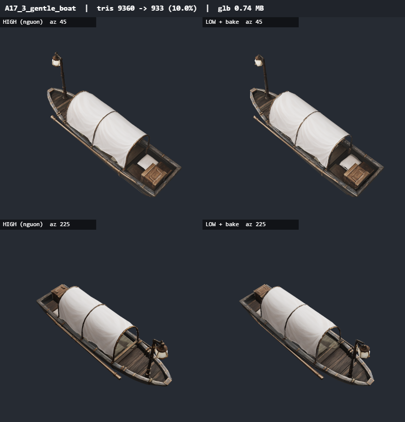
9360 → 933 tam giác (10.0%) · 3.15 MB → 0.74 MB · 5.8s
baseColor 1024x1024 jpeg · metallicRoughness 1024x1024 jpeg · normal 1024x1024 jpeg · occlusion 1024x1024 jpeg
khối rời loại 61/108 (31% tam giác nguồn, đã bake vào texture) · UV 250 đảo, phủ 58% · bake phủ 58% · bbox lệch 1.416%
A17_4_flooded_supper_table act-01

9907 → 990 tam giác (10.0%) · 2.88 MB → 0.84 MB · 5.7s
baseColor 1024x1024 jpeg · metallicRoughness 1024x1024 jpeg · normal 1024x1024 jpeg · occlusion 1024x1024 jpeg
khối rời loại 0/66 (0% tam giác nguồn, đã bake vào texture) · UV 333 đảo, phủ 52% · bake phủ 52% · bbox lệch 0.34%
A17_5_flooded_lace_window act-01

9947 → 992 tam giác (10.0%) · 4.36 MB → 0.82 MB · 5.9s
baseColor 1024x1024 jpeg · metallicRoughness 1024x1024 jpeg · normal 1024x1024 jpeg · occlusion 1024x1024 jpeg
khối rời loại 3/24 (1% tam giác nguồn, đã bake vào texture) · UV 167 đảo, phủ 63% · bake phủ 63% · bbox lệch 0.38%
A17_6_gentle_dock act-01

9876 → 985 tam giác (10.0%) · 3.46 MB → 0.87 MB · 6.1s
baseColor 1024x1024 jpeg · metallicRoughness 1024x1024 jpeg · normal 1024x1024 jpeg · occlusion 1024x1024 jpeg
khối rời loại 9/74 (14% tam giác nguồn, đã bake vào texture) · UV 363 đảo, phủ 54% · bake phủ 54% · bbox lệch 1.714%
A18_1_ox_cart act-01

9413 → 927 tam giác (9.8%) · 4.05 MB → 0.91 MB · 7.6s
baseColor 1024x1024 jpeg · metallicRoughness 1024x1024 jpeg · normal 1024x1024 jpeg · occlusion 1024x1024 jpeg
khối rời loại 36/104 (13% tam giác nguồn, đã bake vào texture) · UV 335 đảo, phủ 52% · bake phủ 50% · bbox lệch 1.335%
A18_2_bed_clean_pillow act-01

7781 → 771 tam giác (9.9%) · 4.48 MB → 0.68 MB · 6.2s
baseColor 1024x1024 jpeg · metallicRoughness 1024x1024 jpeg · normal 1024x1024 jpeg · occlusion 1024x1024 jpeg
khối rời loại 56/72 (20% tam giác nguồn, đã bake vào texture) · UV 169 đảo, phủ 63% · bake phủ 63% · bbox lệch 0.717%
A18_3_delvings_mouth act-01

7847 → 773 tam giác (9.8%) · 4.24 MB → 0.93 MB · 7.6s
baseColor 1024x1024 jpeg · metallicRoughness 1024x1024 jpeg · normal 1024x1024 jpeg · occlusion 1024x1024 jpeg
khối rời loại 95/233 (14% tam giác nguồn, đã bake vào texture) · UV 324 đảo, phủ 61% · bake phủ 60% · bbox lệch 1.629%
A18_4_hospice_range act-01

8950 → 895 tam giác (10.0%) · 4.10 MB → 0.60 MB · 4.1s
baseColor 1024x1024 jpeg · metallicRoughness 1024x1024 jpeg · normal 1024x1024 jpeg · occlusion 1024x1024 jpeg
khối rời loại 48/100 (7% tam giác nguồn, đã bake vào texture) · UV 156 đảo, phủ 61% · bake phủ 61% · bbox lệch 0.552%
A18_5_hospice_wall_niche act-01

9127 → 912 tam giác (10.0%) · 2.50 MB → 0.45 MB · 4.3s
baseColor 1024x1024 jpeg · metallicRoughness 1024x1024 jpeg · normal 1024x1024 jpeg · occlusion 1024x1024 jpeg
khối rời loại 3/7 (27% tam giác nguồn, đã bake vào texture) · UV 78 đảo, phủ 71% · bake phủ 71% · bbox lệch 0.043%
A18_6_hilltop_steps act-01

8209 → 806 tam giác (9.8%) · 2.65 MB → 0.65 MB · 5.6s
baseColor 1024x1024 jpeg · metallicRoughness 1024x1024 jpeg · normal 1024x1024 jpeg · occlusion 1024x1024 jpeg
khối rời loại 13/80 (7% tam giác nguồn, đã bake vào texture) · UV 286 đảo, phủ 66% · bake phủ 66% · bbox lệch 0.285%
A19_1_vase_flowers act-01

7862 → 782 tam giác (10.0%) · 2.62 MB → 0.76 MB · 6.3s
baseColor 1024x1024 jpeg · metallicRoughness 1024x1024 jpeg · normal 1024x1024 jpeg · occlusion 1024x1024 jpeg
khối rời loại 2/49 (1% tam giác nguồn, đã bake vào texture) · UV 184 đảo, phủ 50% · bake phủ 50% · bbox lệch 0.435%
A19_2_poppy_tea_tray act-01

10430 → 1035 tam giác (9.9%) · 2.86 MB → 0.78 MB · 6.4s
baseColor 1024x1024 jpeg · metallicRoughness 1024x1024 jpeg · normal 1024x1024 jpeg · occlusion 1024x1024 jpeg
khối rời loại 12/54 (4% tam giác nguồn, đã bake vào texture) · UV 220 đảo, phủ 63% · bake phủ 63% · bbox lệch 0.817%
A19_3_window_chair act-01

9440 → 943 tam giác (10.0%) · 3.29 MB → 0.74 MB · 6.4s
baseColor 1024x1024 jpeg · metallicRoughness 1024x1024 jpeg · normal 1024x1024 jpeg · occlusion 1024x1024 jpeg
khối rời loại 0/24 (0% tam giác nguồn, đã bake vào texture) · UV 165 đảo, phủ 61% · bake phủ 61% · bbox lệch 0%
A19_4_linen_press act-01

9940 → 993 tam giác (10.0%) · 3.47 MB → 0.78 MB · 6.5s
baseColor 1024x1024 jpeg · metallicRoughness 1024x1024 jpeg · normal 1024x1024 jpeg · occlusion 1024x1024 jpeg
khối rời loại 18/77 (8% tam giác nguồn, đã bake vào texture) · UV 281 đảo, phủ 66% · bake phủ 66% · bbox lệch 0.221%
A19_5_linen_screen act-01

9914 → 990 tam giác (10.0%) · 3.43 MB → 0.67 MB · 6.3s
baseColor 1024x1024 jpeg · metallicRoughness 1024x1024 jpeg · normal 1024x1024 jpeg · occlusion 1024x1024 jpeg
khối rời loại 14/37 (10% tam giác nguồn, đã bake vào texture) · UV 171 đảo, phủ 63% · bake phủ 61% · bbox lệch 0.137%
A19_6_tall_ward_window act-01

10361 → 1036 tam giác (10.0%) · 2.95 MB → 0.43 MB · 5.1s
baseColor 1024x1024 jpeg · metallicRoughness 1024x1024 jpeg · normal 1024x1024 jpeg · occlusion 1024x1024 jpeg
khối rời loại 3/5 (6% tam giác nguồn, đã bake vào texture) · UV 71 đảo, phủ 71% · bake phủ 71% · bbox lệch 0.117%
A20_1_sleeper_young_woman act-01

7305 → 730 tam giác (10.0%) · 3.07 MB → 0.77 MB · 6.6s
baseColor 1024x1024 jpeg · metallicRoughness 1024x1024 jpeg · normal 1024x1024 jpeg · occlusion 1024x1024 jpeg
khối rời loại 90/242 (15% tam giác nguồn, đã bake vào texture) · UV 228 đảo, phủ 66% · bake phủ 66% · bbox lệch 1.067%
A20_2_sleeper_old_man act-01

8357 → 832 tam giác (10.0%) · 3.32 MB → 0.72 MB · 6.7s
baseColor 1024x1024 jpeg · metallicRoughness 1024x1024 jpeg · normal 1024x1024 jpeg · occlusion 1024x1024 jpeg
khối rời loại 30/59 (8% tam giác nguồn, đã bake vào texture) · UV 239 đảo, phủ 63% · bake phủ 63% · bbox lệch 0.536%
A20_3_sleeper_fisherman act-01

8083 → 808 tam giác (10.0%) · 3.79 MB → 0.82 MB · 8.6s
baseColor 1024x1024 jpeg · metallicRoughness 1024x1024 jpeg · normal 1024x1024 jpeg · occlusion 1024x1024 jpeg
khối rời loại 13/53 (4% tam giác nguồn, đã bake vào texture) · UV 280 đảo, phủ 68% · bake phủ 68% · bbox lệch 6.006%
bbox lệch 6.01% đường chéo
A20_4_sleeper_farm_woman act-01

7857 → 784 tam giác (10.0%) · 3.66 MB → 0.74 MB · 6.9s
baseColor 1024x1024 jpeg · metallicRoughness 1024x1024 jpeg · normal 1024x1024 jpeg · occlusion 1024x1024 jpeg
khối rời loại 64/191 (17% tam giác nguồn, đã bake vào texture) · UV 213 đảo, phủ 66% · bake phủ 66% · bbox lệch 1.322%
A20_5_irrigation_channel act-01

8296 → 816 tam giác (9.8%) · 4.51 MB → 0.72 MB · 5.6s
baseColor 1024x1024 jpeg · metallicRoughness 1024x1024 jpeg · normal 1024x1024 jpeg · occlusion 1024x1024 jpeg
khối rời loại 99/207 (18% tam giác nguồn, đã bake vào texture) · UV 189 đảo, phủ 74% · bake phủ 74% · bbox lệch 1.445%
A20_6_harvest_table act-01

9512 → 942 tam giác (9.9%) · 3.77 MB → 0.95 MB · 6.4s
baseColor 1024x1024 jpeg · metallicRoughness 1024x1024 jpeg · normal 1024x1024 jpeg · occlusion 1024x1024 jpeg
khối rời loại 77/197 (14% tam giác nguồn, đã bake vào texture) · UV 549 đảo, phủ 50% · bake phủ 50% · bbox lệch 0.276%
A21_1_barrow_door act-01

8956 → 890 tam giác (9.9%) · 3.27 MB → 0.86 MB · 5.7s
baseColor 1024x1024 jpeg · metallicRoughness 1024x1024 jpeg · normal 1024x1024 jpeg · occlusion 1024x1024 jpeg
khối rời loại 86/151 (14% tam giác nguồn, đã bake vào texture) · UV 233 đảo, phủ 63% · bake phủ 63% · bbox lệch 0.096%
A21_2_flint_retaining_wall act-01

6760 → 673 tam giác (10.0%) · 2.98 MB → 0.78 MB · 5.9s
baseColor 1024x1024 jpeg · metallicRoughness 1024x1024 jpeg · normal 1024x1024 jpeg · occlusion 1024x1024 jpeg
khối rời loại 76/106 (33% tam giác nguồn, đã bake vào texture) · UV 161 đảo, phủ 74% · bake phủ 74% · bbox lệch 0.132%
A21_3_peat_stack act-01

10856 → 1080 tam giác (10.0%) · 2.30 MB → 0.87 MB · 6s
baseColor 1024x1024 jpeg · metallicRoughness 1024x1024 jpeg · normal 1024x1024 jpeg · occlusion 1024x1024 jpeg
khối rời loại 14/116 (5% tam giác nguồn, đã bake vào texture) · UV 322 đảo, phủ 61% · bake phủ 61% · bbox lệch 0.376%
A21_4_vigil_chair act-01

3278 → 327 tam giác (10.0%) · 0.61 MB → 0.62 MB · 4.7s
baseColor 1024x1024 jpeg · metallicRoughness 1024x1024 jpeg · normal 1024x1024 jpeg · occlusion 1024x1024 jpeg
khối rời loại 0/27 (0% tam giác nguồn, đã bake vào texture) · UV 107 đảo, phủ 61% · bake phủ 61% · bbox lệch 2.682%
A21_5_leaning_stones act-01

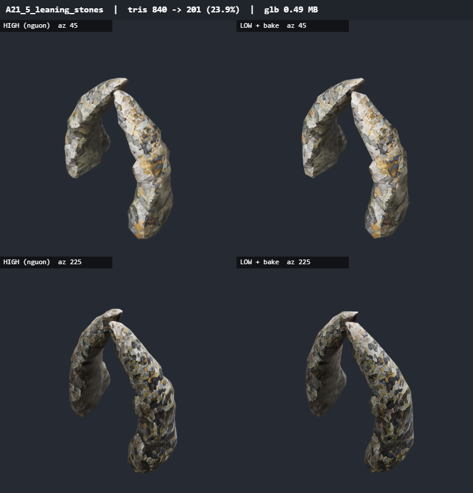
840 → 201 tam giác (23.9%) · 2.28 MB → 0.49 MB · 4.8s
baseColor 1024x1024 jpeg · metallicRoughness 1024x1024 jpeg · normal 1024x1024 jpeg · occlusion 1024x1024 jpeg
khối rời loại 0/2 (0% tam giác nguồn, đã bake vào texture) · UV 24 đảo, phủ 54% · bake phủ 54% · bbox lệch 0%
A21_6_bog_grave act-01

12746 → 1270 tam giác (10.0%) · 2.64 MB → 0.96 MB · 6.3s
baseColor 1024x1024 jpeg · metallicRoughness 1024x1024 jpeg · normal 1024x1024 jpeg · occlusion 1024x1024 jpeg
khối rời loại 72/186 (18% tam giác nguồn, đã bake vào texture) · UV 481 đảo, phủ 48% · bake phủ 48% · bbox lệch 1.568%
A22_1_worn_shoes act-01

4957 → 461 tam giác (9.3%) · 0.96 MB → 0.57 MB · 5.6s
baseColor 1024x1024 jpeg · metallicRoughness 1024x1024 jpeg · normal 1024x1024 jpeg · occlusion 1024x1024 jpeg
khối rời loại 0/4 (0% tam giác nguồn, đã bake vào texture) · UV 175 đảo, phủ 61% · bake phủ 58% · bbox lệch 0%
A22_2_toll_post act-01

5021 → 502 tam giác (10.0%) · 1.33 MB → 0.81 MB · 6.1s
baseColor 1024x1024 jpeg · metallicRoughness 1024x1024 jpeg · normal 1024x1024 jpeg · occlusion 1024x1024 jpeg
khối rời loại 6/50 (5% tam giác nguồn, đã bake vào texture) · UV 149 đảo, phủ 61% · bake phủ 61% · bbox lệch 0.963%
A22_3_wicker_cradle act-01

18318 → 1801 tam giác (9.8%) · 4.65 MB → 0.99 MB · 6.9s
baseColor 1024x1024 jpeg · metallicRoughness 1024x1024 jpeg · normal 1024x1024 jpeg · occlusion 1024x1024 jpeg
khối rời loại 4/36 (3% tam giác nguồn, đã bake vào texture) · UV 482 đảo, phủ 54% · bake phủ 54% · bbox lệch 3.1%
bbox lệch 3.10% đường chéo
A22_4_harvester_cairn act-01

18906 → 1883 tam giác (10.0%) · 2.41 MB → 0.92 MB · 6.7s
baseColor 1024x1024 jpeg · metallicRoughness 1024x1024 jpeg · normal 1024x1024 jpeg · occlusion 1024x1024 jpeg
khối rời loại 38/87 (5% tam giác nguồn, đã bake vào texture) · UV 374 đảo, phủ 54% · bake phủ 54% · bbox lệch 0.275%
A22_5_crook_and_coat act-01

5294 → 520 tam giác (9.8%) · 1.65 MB → 0.64 MB · 7.2s
baseColor 1024x1024 jpeg · metallicRoughness 1024x1024 jpeg · normal 1024x1024 jpeg · occlusion 1024x1024 jpeg
khối rời loại 4/28 (2% tam giác nguồn, đã bake vào texture) · UV 128 đảo, phủ 58% · bake phủ 58% · bbox lệch 0.45%
fallback unwrap: {"pPrune":true}
unwrap lỗi ({}): Không xếp được atlas
A22_6_straw_doll act-01

7564 → 751 tam giác (9.9%) · 1.49 MB → 0.97 MB · 6.1s
baseColor 1024x1024 jpeg · metallicRoughness 1024x1024 jpeg · normal 1024x1024 jpeg · occlusion 1024x1024 jpeg
khối rời loại 3/45 (0% tam giác nguồn, đã bake vào texture) · UV 349 đảo, phủ 50% · bake phủ 50% · bbox lệch 3.766%
bbox lệch 3.77% đường chéo
A23_1_abandoned_reaping act-01

13941 → 1385 tam giác (9.9%) · 1.94 MB → 0.88 MB · 7.4s
baseColor 1024x1024 jpeg · metallicRoughness 1024x1024 jpeg · normal 1024x1024 jpeg · occlusion 1024x1024 jpeg
khối rời loại 26/46 (1% tam giác nguồn, đã bake vào texture) · UV 360 đảo, phủ 63% · bake phủ 58% · bbox lệch 2.125%
A23_2_ribbon_thorn act-01

12828 → 1256 tam giác (9.8%) · 5.06 MB → 1.04 MB · 5.9s
baseColor 1024x1024 jpeg · metallicRoughness 1024x1024 jpeg · normal 1024x1024 jpeg · occlusion 1024x1024 jpeg
khối rời loại 127/165 (6% tam giác nguồn, đã bake vào texture) · UV 590 đảo, phủ 50% · bake phủ 50% · bbox lệch 0.85%
A23_3_garth_flower_bed act-01

12071 → 1190 tam giác (9.9%) · 2.47 MB → 1.05 MB · 7.3s
baseColor 1024x1024 jpeg · metallicRoughness 1024x1024 jpeg · normal 1024x1024 jpeg · occlusion 1024x1024 jpeg
khối rời loại 0/7 (0% tam giác nguồn, đã bake vào texture) · UV 547 đảo, phủ 58% · bake phủ 58% · bbox lệch 0.797%
A23_4_potted_flowers act-01

7262 → 726 tam giác (10.0%) · 1.52 MB → 0.68 MB · 6.5s
baseColor 1024x1024 jpeg · metallicRoughness 1024x1024 jpeg · normal 1024x1024 jpeg · occlusion 1024x1024 jpeg
khối rời loại 0/20 (0% tam giác nguồn, đã bake vào texture) · UV 146 đảo, phủ 63% · bake phủ 60% · bbox lệch 0.776%
A23_5_walled_flower_bed act-01

8682 → 857 tam giác (9.9%) · 1.46 MB → 0.82 MB · 6.7s
baseColor 1024x1024 jpeg · metallicRoughness 1024x1024 jpeg · normal 1024x1024 jpeg · occlusion 1024x1024 jpeg
khối rời loại 0/63 (0% tam giác nguồn, đã bake vào texture) · UV 295 đảo, phủ 56% · bake phủ 56% · bbox lệch 2.36%
A23_6_drying_line act-01

914 → 198 tam giác (21.7%) · 1.08 MB → 0.37 MB · 3s
baseColor 1024x1024 jpeg · metallicRoughness 1024x1024 jpeg · normal 1024x1024 jpeg · occlusion 1024x1024 jpeg
khối rời loại 2/18 (7% tam giác nguồn, đã bake vào texture) · UV 74 đảo, phủ 63% · bake phủ 63% · bbox lệch 0.215%
A24_1_kitchen_table act-01

3540 → 354 tam giác (10.0%) · 2.04 MB → 0.66 MB · 5.5s
baseColor 1024x1024 jpeg · metallicRoughness 1024x1024 jpeg · normal 1024x1024 jpeg · occlusion 1024x1024 jpeg
khối rời loại 0/19 (0% tam giác nguồn, đã bake vào texture) · UV 119 đảo, phủ 66% · bake phủ 66% · bbox lệch 0.14%
A24_2_bread_rack act-01

11010 → 1100 tam giác (10.0%) · 3.87 MB → 0.90 MB · 7.2s
baseColor 1024x1024 jpeg · metallicRoughness 1024x1024 jpeg · normal 1024x1024 jpeg · occlusion 1024x1024 jpeg
khối rời loại 0/47 (0% tam giác nguồn, đã bake vào texture) · UV 271 đảo, phủ 54% · bake phủ 54% · bbox lệch 0.3%
A24_3_linen_folding_table act-01

12296 → 1530 tam giác (12.4%) · 1.79 MB → 0.89 MB · 7s
baseColor 1024x1024 jpeg · metallicRoughness 1024x1024 jpeg · normal 1024x1024 jpeg · occlusion 1024x1024 jpeg
khối rời loại 0/13 (0% tam giác nguồn, đã bake vào texture) · UV 789 đảo, phủ 58% · bake phủ 55% · bbox lệch 6.239%
bbox lệch 6.24% đường chéo
A24_4_turned_down_coverlet act-01

11742 → 1172 tam giác (10.0%) · 1.67 MB → 0.56 MB · 4.3s
baseColor 1024x1024 jpeg · metallicRoughness 1024x1024 jpeg · normal 1024x1024 jpeg · occlusion 1024x1024 jpeg
khối rời loại 0/4 (0% tam giác nguồn, đã bake vào texture) · UV 81 đảo, phủ 63% · bake phủ 63% · bbox lệch 0.077%
A24_5_turned_down_quilt act-01

16500 → 1644 tam giác (10.0%) · 2.05 MB → 0.54 MB · 3.9s
baseColor 1024x1024 jpeg · metallicRoughness 1024x1024 jpeg · normal 1024x1024 jpeg · occlusion 1024x1024 jpeg
khối rời loại 0/1 (0% tam giác nguồn, đã bake vào texture) · UV 71 đảo, phủ 44% · bake phủ 44% · bbox lệch 0.2%
A24_6_linen_pillow act-01

5951 → 595 tam giác (10.0%) · 1.20 MB → 0.45 MB · 3.1s
baseColor 1024x1024 jpeg · metallicRoughness 1024x1024 jpeg · normal 1024x1024 jpeg · occlusion 1024x1024 jpeg
khối rời loại 0/2 (0% tam giác nguồn, đã bake vào texture) · UV 44 đảo, phủ 40% · bake phủ 40% · bbox lệch 0.333%
A25_1_root_rib_arch act-01

18973 → 1869 tam giác (9.8%) · 5.00 MB → 0.97 MB · 5.8s
baseColor 1024x1024 jpeg · metallicRoughness 1024x1024 jpeg · normal 1024x1024 jpeg · occlusion 1024x1024 jpeg
khối rời loại 141/184 (21% tam giác nguồn, đã bake vào texture) · UV 437 đảo, phủ 50% · bake phủ 50% · bbox lệch 2.774%
A25_2_plank_crossing act-01

1444 → 200 tam giác (13.9%) · 2.44 MB → 0.61 MB · 4s
baseColor 1024x1024 jpeg · metallicRoughness 1024x1024 jpeg · normal 1024x1024 jpeg · occlusion 1024x1024 jpeg
khối rời loại 0/14 (0% tam giác nguồn, đã bake vào texture) · UV 85 đảo, phủ 61% · bake phủ 61% · bbox lệch 0.327%
A25_3_root_fall act-01

18177 → 1785 tam giác (9.8%) · 4.22 MB → 1.00 MB · 7.1s
baseColor 1024x1024 jpeg · metallicRoughness 1024x1024 jpeg · normal 1024x1024 jpeg · occlusion 1024x1024 jpeg
khối rời loại 103/180 (19% tam giác nguồn, đã bake vào texture) · UV 394 đảo, phủ 52% · bake phủ 52% · bbox lệch 14.893%
bbox lệch 14.89% đường chéo
đáy (y min) lệch 14.89% đường chéo: pivot/mặt đất
A25_4_harvest_basket act-01

15208 → 1510 tam giác (9.9%) · 2.41 MB → 0.91 MB · 7s
baseColor 1024x1024 jpeg · metallicRoughness 1024x1024 jpeg · normal 1024x1024 jpeg · occlusion 1024x1024 jpeg
khối rời loại 0/37 (0% tam giác nguồn, đã bake vào texture) · UV 384 đảo, phủ 56% · bake phủ 56% · bbox lệch 0.249%
A25_5_tending_kit act-01

2444 → 244 tam giác (10.0%) · 1.23 MB → 0.63 MB · 6.3s
baseColor 1024x1024 jpeg · metallicRoughness 1024x1024 jpeg · normal 1024x1024 jpeg · occlusion 1024x1024 jpeg
khối rời loại 0/12 (0% tam giác nguồn, đã bake vào texture) · UV 92 đảo, phủ 71% · bake phủ 71% · bbox lệch 0.478%
A25_6_tamsin_lantern act-01

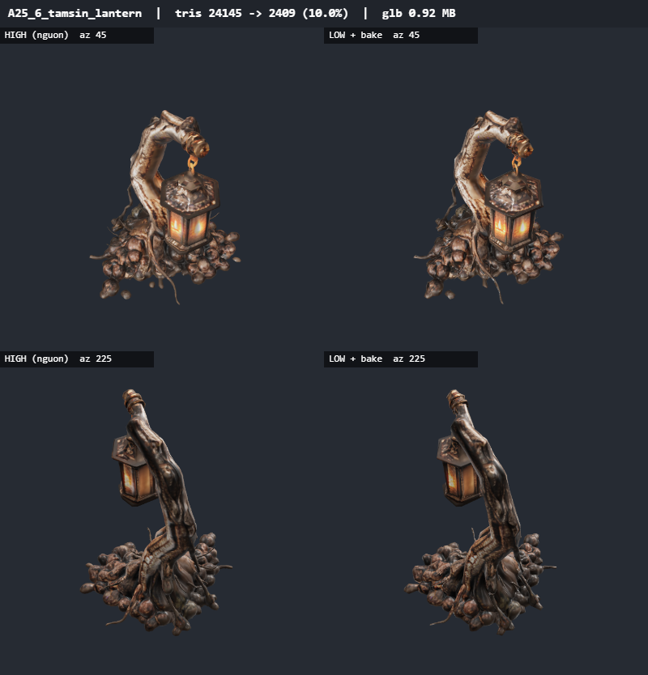
24145 → 2409 tam giác (10.0%) · 1.76 MB → 0.92 MB · 7.8s
baseColor 1024x1024 jpeg · metallicRoughness 1024x1024 jpeg · normal 1024x1024 jpeg · occlusion 1024x1024 jpeg
khối rời loại 2/18 (0% tam giác nguồn, đã bake vào texture) · UV 301 đảo, phủ 52% · bake phủ 52% · bbox lệch 0.19%
mossy_stump common

10540 → 1054 tam giác (10.0%) · 3.37 MB → 0.71 MB · 5.3s
baseColor 1024x1024 jpeg · metallicRoughness 1024x1024 jpeg · normal 1024x1024 jpeg · occlusion 1024x1024 jpeg
khối rời loại 0/1 (0% tam giác nguồn, đã bake vào texture) · UV 103 đảo, phủ 61% · bake phủ 61% · bbox lệch 0.382%
mushroom_cluster common

8902 → 889 tam giác (10.0%) · 3.80 MB → 0.70 MB · 5.4s
baseColor 1024x1024 jpeg · metallicRoughness 1024x1024 jpeg · normal 1024x1024 jpeg · occlusion 1024x1024 jpeg
khối rời loại 4/44 (1% tam giác nguồn, đã bake vào texture) · UV 158 đảo, phủ 63% · bake phủ 63% · bbox lệch 0.349%
riverbank_stones common

10073 → 1007 tam giác (10.0%) · 3.83 MB → 0.62 MB · 5.2s
baseColor 1024x1024 jpeg · metallicRoughness 1024x1024 jpeg · normal 1024x1024 jpeg · occlusion 1024x1024 jpeg
khối rời loại 21/33 (2% tam giác nguồn, đã bake vào texture) · UV 62 đảo, phủ 66% · bake phủ 66% · bbox lệch 0.339%
bone_pile common

10080 → 1007 tam giác (10.0%) · 4.87 MB → 0.99 MB · 7.2s
baseColor 1024x1024 jpeg · metallicRoughness 1024x1024 jpeg · normal 1024x1024 jpeg · occlusion 1024x1024 jpeg
khối rời loại 0/62 (0% tam giác nguồn, đã bake vào texture) · UV 318 đảo, phủ 56% · bake phủ 56% · bbox lệch 0.603%
broken_column common

10754 → 1074 tam giác (10.0%) · 4.64 MB → 0.81 MB · 5.9s
baseColor 1024x1024 jpeg · metallicRoughness 1024x1024 jpeg · normal 1024x1024 jpeg · occlusion 1024x1024 jpeg
khối rời loại 1/6 (1% tam giác nguồn, đã bake vào texture) · UV 110 đảo, phủ 61% · bake phủ 60% · bbox lệch 0.066%
candle_cluster common

10245 → 1024 tam giác (10.0%) · 3.16 MB → 0.74 MB · 6.5s
baseColor 1024x1024 jpeg · metallicRoughness 1024x1024 jpeg · normal 1024x1024 jpeg · occlusion 1024x1024 jpeg
khối rời loại 10/15 (4% tam giác nguồn, đã bake vào texture) · UV 182 đảo, phủ 66% · bake phủ 66% · bbox lệch 1.978%
crypt_wall common

10787 → 1064 tam giác (9.9%) · 5.30 MB → 0.90 MB · 4.4s
baseColor 1024x1024 jpeg · metallicRoughness 1024x1024 jpeg · normal 1024x1024 jpeg · occlusion 1024x1024 jpeg
khối rời loại 0/31 (0% tam giác nguồn, đã bake vào texture) · UV 329 đảo, phủ 66% · bake phủ 66% · bbox lệch 0.336%
fallen_bell common

10012 → 997 tam giác (10.0%) · 4.83 MB → 0.67 MB · 6.4s
baseColor 1024x1024 jpeg · metallicRoughness 1024x1024 jpeg · normal 1024x1024 jpeg · occlusion 1024x1024 jpeg
khối rời loại 0/8 (0% tam giác nguồn, đã bake vào texture) · UV 82 đảo, phủ 68% · bake phủ 68% · bbox lệch 0.322%
flint_boulders common

10236 → 1022 tam giác (10.0%) · 4.83 MB → 0.84 MB · 5.6s
baseColor 1024x1024 jpeg · metallicRoughness 1024x1024 jpeg · normal 1024x1024 jpeg · occlusion 1024x1024 jpeg
khối rời loại 7/17 (1% tam giác nguồn, đã bake vào texture) · UV 109 đảo, phủ 68% · bake phủ 68% · bbox lệch 0.227%
mine_timber common

9902 → 990 tam giác (10.0%) · 3.99 MB → 0.72 MB · 4.5s
baseColor 1024x1024 jpeg · metallicRoughness 1024x1024 jpeg · normal 1024x1024 jpeg · occlusion 1024x1024 jpeg
khối rời loại 4/21 (2% tam giác nguồn, đã bake vào texture) · UV 123 đảo, phủ 71% · bake phủ 71% · bbox lệch 0.176%
sarcophagus common

10300 → 1030 tam giác (10.0%) · 4.08 MB → 0.70 MB · 4.4s
baseColor 1024x1024 jpeg · metallicRoughness 1024x1024 jpeg · normal 1024x1024 jpeg · occlusion 1024x1024 jpeg
khối rời loại 0/4 (0% tam giác nguồn, đã bake vào texture) · UV 107 đảo, phủ 68% · bake phủ 68% · bbox lệch 0%
stalagmites common

9754 → 974 tam giác (10.0%) · 3.86 MB → 0.66 MB · 4.7s
baseColor 1024x1024 jpeg · metallicRoughness 1024x1024 jpeg · normal 1024x1024 jpeg · occlusion 1024x1024 jpeg
khối rời loại 0/1 (0% tam giác nguồn, đã bake vào texture) · UV 56 đảo, phủ 56% · bake phủ 56% · bbox lệch 0.47%